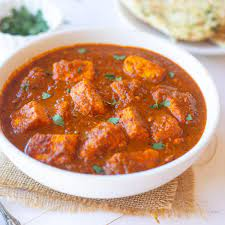

Vindaloo Curry
Ingredients:
- 500 grams boneless meat (pork, chicken, or lamb), cut into bite-sized pieces
- 2 onions, finely chopped
- 4-5 cloves of garlic, minced
- 1-inch piece of ginger, grated
- 3-4 dried red chilies (adjust to your spice preference)
- 1 teaspoon cumin seeds
- 1 teaspoon mustard seeds
- 1/2 teaspoon turmeric powder
- 1 tablespoon red wine vinegar or malt vinegar
- 1 teaspoon sugar
- Salt to taste
- 2 tablespoons vegetable oil
- Water as needed
- Fresh cilantro leaves for garnish
Instructions:
1. Start by soaking the dried red chilies in warm water for about 15 minutes. Then, blend them into a smooth paste.
2. Heat vegetable oil in a pan over medium heat. Add cumin and mustard seeds and let them splutter.
3. Add the finely chopped onions and sauté until they become soft and translucent.
4. Stir in the minced garlic and grated ginger. Cook for a couple of minutes until the raw smell disappears.
5. Add the red chili paste, turmeric powder, and salt. Mix well and cook for a few minutes.
6. Add the meat pieces and sear them until they are browned on all sides.
7. Pour in the vinegar, add sugar, and stir to combine.
8. Add enough water to cover the meat, reduce the heat, cover, and simmer for about 30-40 minutes, or until the meat is tender and the curry thickens.
9. Garnish with fresh cilantro leaves.
10. Serve your Vindaloo Curry hot with steamed rice or naan.
Enjoy the bold and spicy flavors of your homemade Vindaloo Curry!